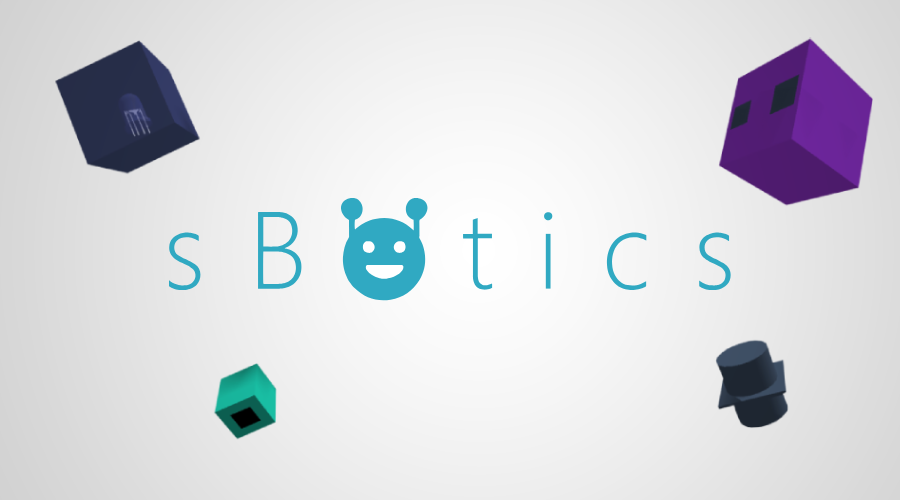
educacional
sBotics
Pensamento computacional e robótico com uma entrada mais acessível.
Lucas Nascimento
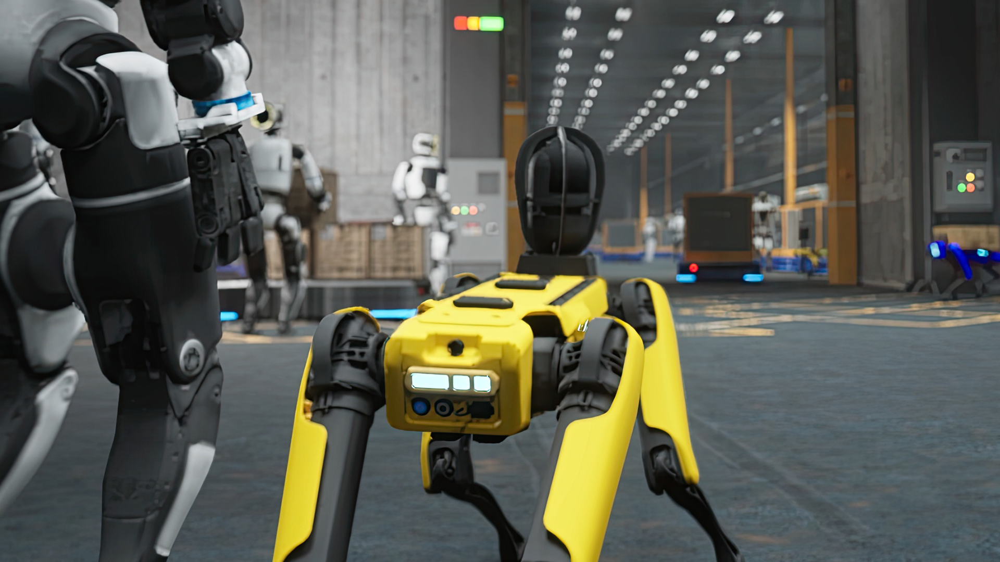
É um prazer conversar sobre os mundos virtuais que ajudam robôs e pessoas a testar ideias antes de enfrentar o mundo físico.
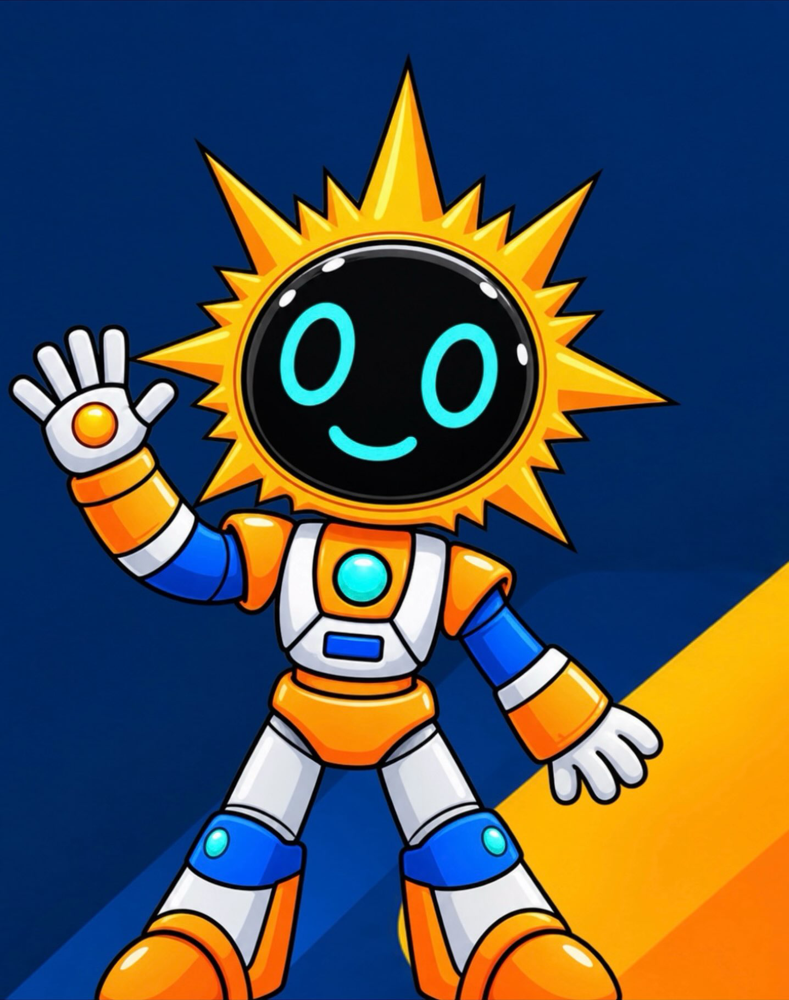
Um projeto da UFRN abriu essa porta e transformou curiosidade em prática.
Comecei a ajudar a construir experiências de robótica para mais estudantes.
Competições e ferramentas virtuais ganharam ainda mais importância.
Uma nova base para ampliar o que um ambiente virtual pode permitir.
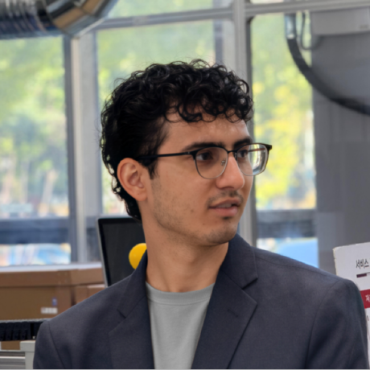
instrumentos, condição e aptidão
De MarI/O a robôs como os da Unitree: treinar no virtual, validar e só então levar a política para a vida real.
De MarI/O a robôs como os da Unitree: treinar no virtual, validar e só então levar a política para a vida real.
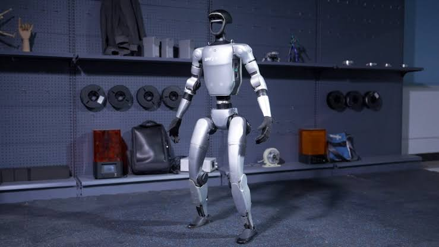
De MarI/O a robôs como os da Unitree: treinar no virtual, validar e só então levar a política para a vida real.

Pensamento computacional e robótico com uma entrada mais acessível.
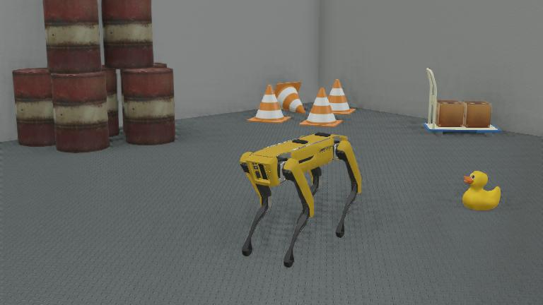
Robôs, sensores, controle e integração em um ambiente visual de simulação.
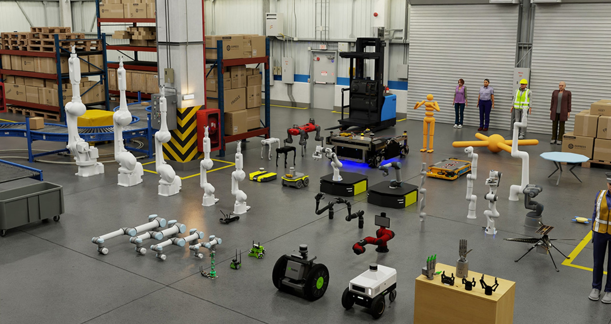
Ambientes e dados para políticas que depois precisam sair do virtual.
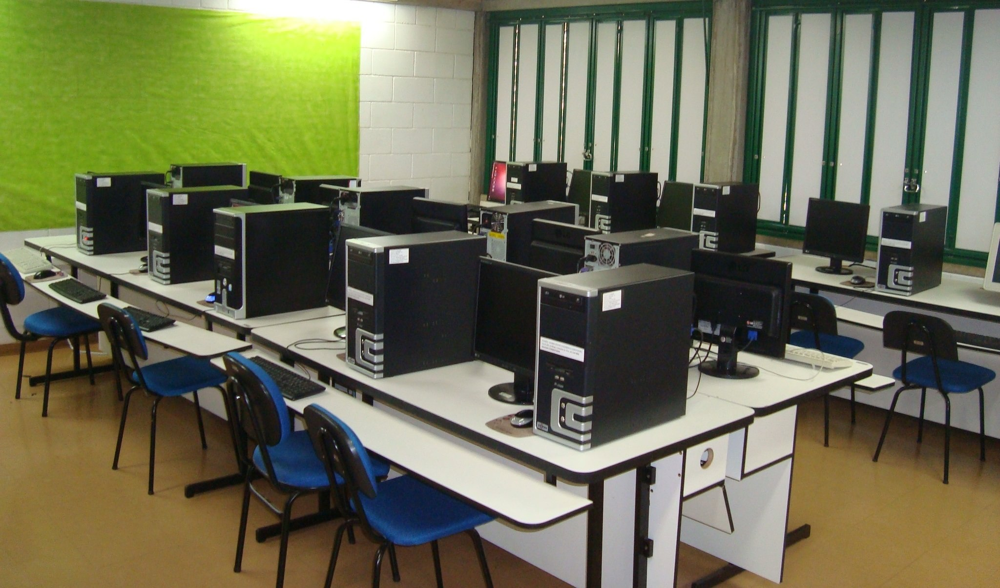
É nesse contexto que o sBotics foi criado.
Não dá para mexer em um simulador de robótica sem se perguntar isso incessantemente.
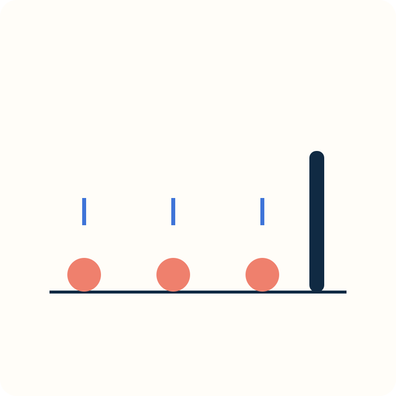
Muito barata.
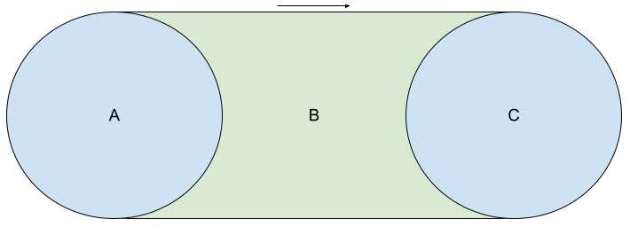
Verifica várias vezes por segundo com grande custo computacional.
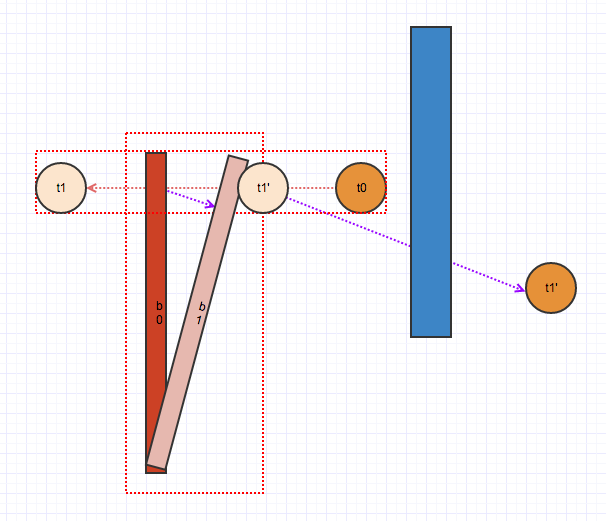
Usa matemática com a velocidade e posição dos objetos para projetar futuras colisões entre 2 objetos.
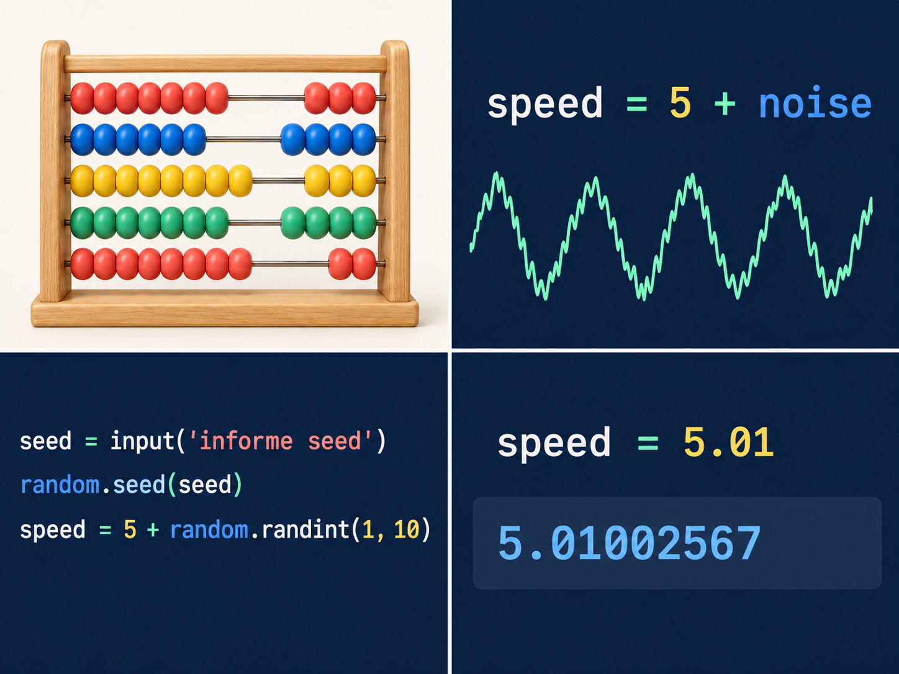
Um robô que resolve problemas com ruídos está mais preparado para o mundo real.
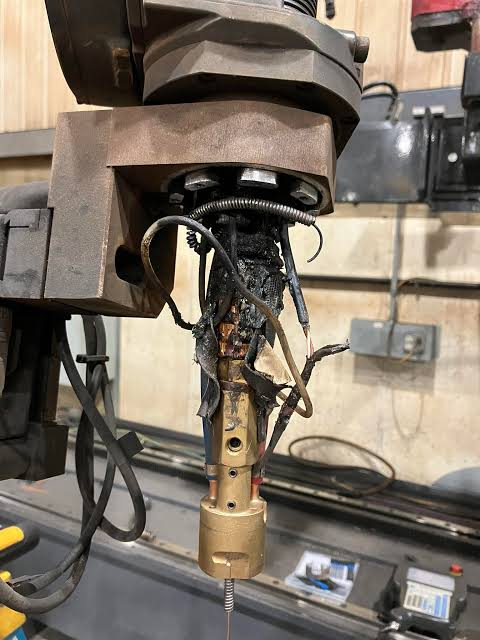
Uma peça pode não encaixar como deveria.
Cabos, motores e baterias podem falhar.
Superfícies, luz e situações reais mudam a experiência.
A simulação é um excelente ponto inicial.
Quanto mais opções existem, maior a distância entre abrir o simulador e conseguir fazer o primeiro experimento.
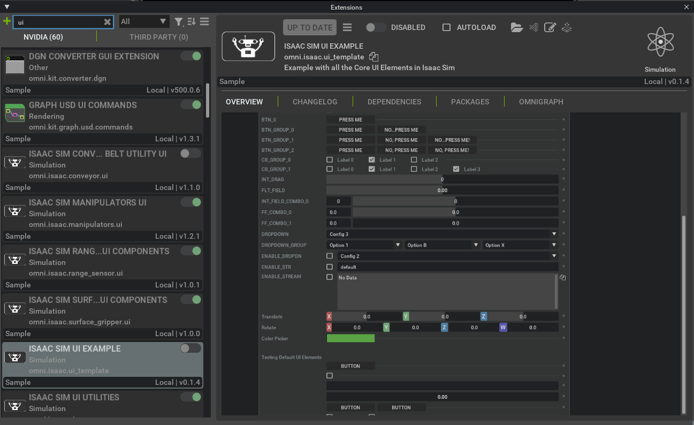
A combinação muda conforme o problema que você quer resolver.
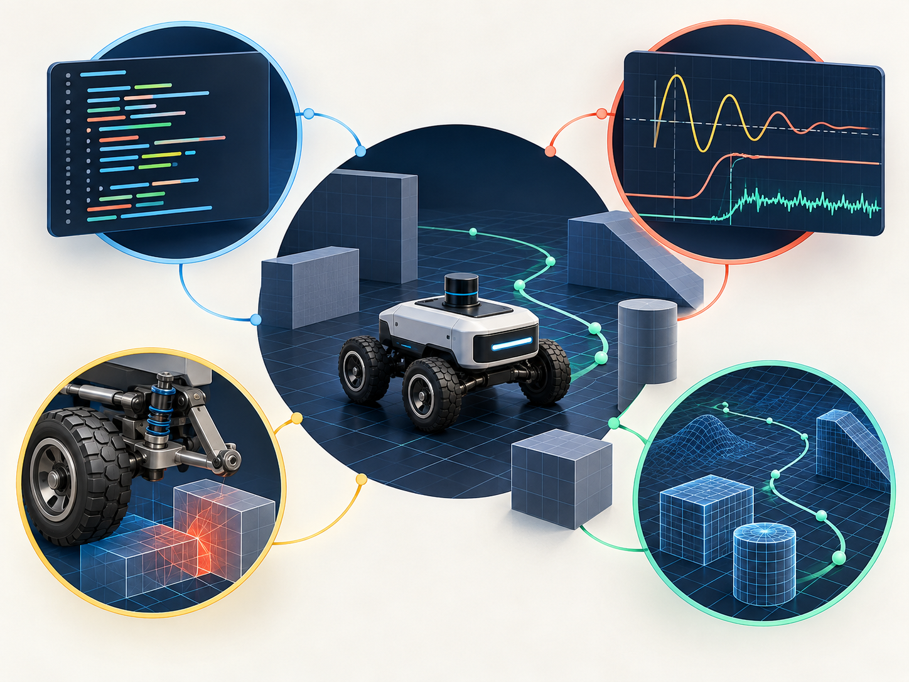
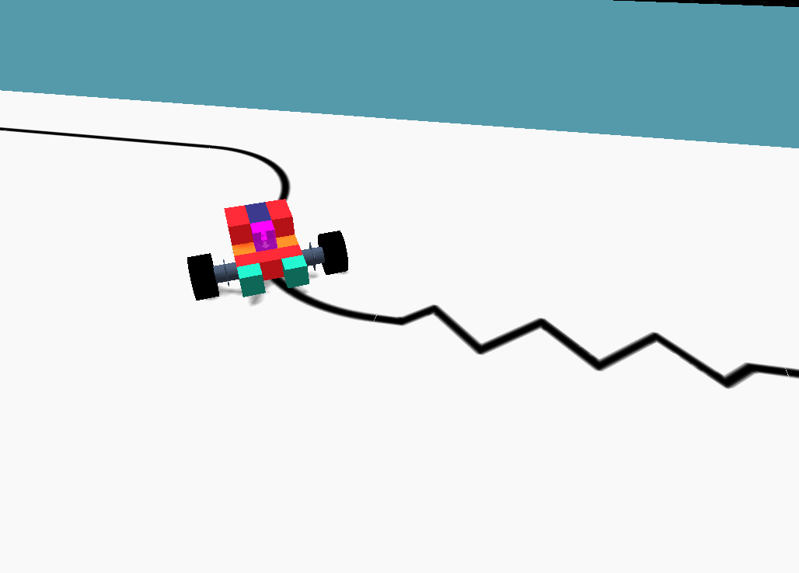
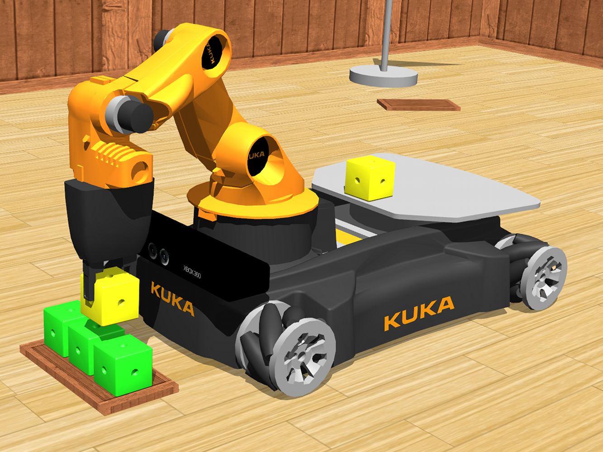
simuladorComece com um robô móvel simples, sensores básicos e uma tarefa observável.
Depois compare mundo ideal, ruído e atraso. área
áreaPara o ensino médio: programação, matemática e física. Na graduação, Ciência da Computação, Engenharia de Computação, Mecatrônica ou Elétrica.
Depois: mestrado em Robótica, IA, Controle ou Computação Gráfica.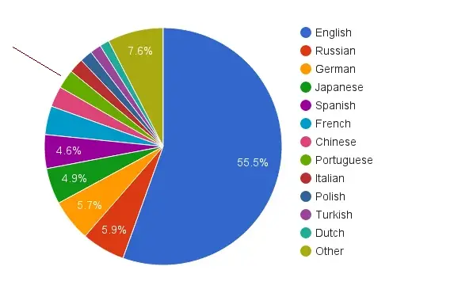
recomendação geralUse inglês todos os dias para acessar documentação, cursos, fóruns e artigos técnicos.
*só 4% do material online disponível é em português